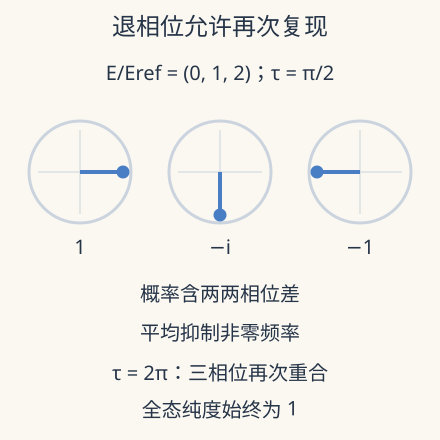

本页目录
强关联与非平衡 III · 本征态热化：相位散开以后，还缺少哪一步？
先修：量子临界、密度矩阵、量子统计。本讲先精确计算有限系统的时间平均，再说明 ETH 为多体局部观测补上什么。实验不模拟热库，也不把三个能级当成宏观材料。
孤立纯态一直幺正演化，温度从哪里来？
1. 把“变得平稳”与“变成热态”分开
把初态写成能量本征态的叠加 \(|\psi(0)\rangle=\sum_n c_n|n\rangle\)，\(H|n\rangle=E_n|n\rangle\)。时间演化只给每项乘相位，整体的纯度始终为 1。对于可观测量 \(A\)，
对角项不动，非对角项以不同频率旋转。许多频率相消时，少数观测量可以看起来平稳；这没有把全态真的变成混合态。若只测一个小子系统，其约化态还可能因与其余部分纠缠而变得混合，必须说明观察的是哪一层。
若能量无简并，对无限长时间取平均，非对角指数的平均为零，得到对角系综 \(\rho_{\rm diag}=\sum_n|c_n|^2|n\rangle\langle n|\)。这是时间平均的表达，不是某一时刻全态的实际密度矩阵。若有能量简并，应保留简并子空间中的相干项。
2. 有限时间平均留下可算的误差
令 \(\omega=(E_m-E_n)/\hbar\)。直接积分而非假设相位随机：
当 \(|\omega|T\gg1\) 时该项受抑制；接近简并的能级需要更长观察窗。因而“平均已经收敛”必须和最小相关频差比较。时间平均是一种滤波，不要求每个瞬时值都接近平均。
取正参考能量 \(E_{\rm ref}>0\)，三个能级 \(E/E_{\rm ref}=(0,1,\alpha)\)，时间以 \(\hbar/E_{\rm ref}\) 为单位。初态的实振幅是 \((\sqrt{(1-p)/2},\sqrt p,\sqrt{(1-p)/2})\)。测投影算符 \(A=|s\rangle\langle s|\)，其中 \(|s\rangle=(1,1,1)/\sqrt3\)，则
每个 \(A_{nn}=1/3\)，所以长时平均总是 \(1/3\)，与权重无关。这是特意选择的投影，不是三个能级满足了 ETH。换一个对角元不相同的观测量，时间平均马上会记住初态权重。

3. 先看一次确切的复现
先预测：时间平均等于 \(1/3\) 后，瞬时观测还会不会重新接近初值？若频率比是整数，这个问题可以精确回答。
调整初态权重、第三能级与观察窗，比较瞬时投影概率、有限时间平均和对角系综值。
默认静态核对：\(p=1/2,\alpha=2\)，观察窗 \(T=4(2\pi)=8\pi\)。所有余弦在完整周期上平均为零，所以平均恰为 \(1/3\)；但窗末三个相位完全重合，\(A(T)=A(0)=(1+1/\sqrt2)^2/3\approx0.971405\)。平均趋稳与瞬时复现可以同时发生。
改变 \(\alpha\) 后，共同周期可能变长；一般有限离散谱仍允许近似复现。曲线不会因为画得很密就产生不可逆性。实验的横轴终点是观察时间，不是系统大小；增加这个终点不能替代热力学极限。
粗粒化前后的纯度可以直接核算。默认权重 \((1/4,1/2,1/4)\) 给出 \(\operatorname{Tr}\rho_{\rm diag}^2=3/8\)，而任意时刻 \(\operatorname{Tr}\rho(\tau)^2=1\)。二者不同，是因为先平均密度矩阵再平方，与先平方再平均不是同一个操作。丢掉可分辨相位需要说明测量时间分辨率或观测限制；不能把人为删除矩阵元描述为系统真的经历了环境退相干。这个检查尤其适合审读只展示时间平均熵的数值研究。
4. ETH 真正添加的是本征态结构
对非可积多体系统的一类少体、局部观测量，常用 ETH 形式为
其中 \(\bar E=(E_m+E_n)/2\)，\(S\) 是微正则熵（此式取 \(k_B=1\)），\(R\) 概括随能级变化的涨落结构。它是有关本征态矩阵元的假设与适用框架，不是每一个 Hamiltonian 的定理；\(R\) 也不能在一份确定模型中随意重新抽样。
关键的对角陈述是：窄能量窗内 \(A_{nn}\) 接近只由能量决定的平滑函数。若初态能量分布足够窄，将 \(A_{\rm th}(E_n)\) 在平均能量处展开，线性项加权后抵消，首个修正约为 \(A_{\rm th}''(\bar E)\operatorname{Var}(E)/2\)。于是对角平均近似热平均，不再敏感于每个 \(|c_n|^2\) 的细节。
非对角项则关系到弛豫、响应与时间涨落。对无简并能隙的情形，长时涨落包含 \(\sum_{m\ne n}|c_m|^2|c_n|^2|A_{mn}|^2\)；小非对角元有助于大多数时刻接近平均。但能隙共振或特定初态可让这一步失效。热化需要这些环节共同成立，不是“相位一散开就出现 Gibbs 分布”。
5. 哪些反例迫使我们保留条件
可积系统有许多独立守恒量，仅固定能量一般不足以描述稳态，需要讨论广义 Gibbs 系综。多体局域化的适用范围还牵涉无序、相互作用、维度与有限时间外推，不能凭慢弛豫曲线直接鉴定。
另一条研究窗口是量子多体疤痕：少量特殊本征态或特殊初态轨道可能在非可积背景中产生异常复现。Turner 等 2017 年首发、2018 年修订的理论研究分析了受约束自旋链中的这种结构。它不表示所有初态都避免热化，也不将一切实验振荡都归因于疤痕。
面向数据的检查顺序应是：先分对称性扇区，排除普通守恒量和简并；再比较不同初态、尺寸与观测量；最后研究矩阵元随能量和系统熵的缩放。把不同扇区混合的能级统计当成混沌证据会出错，有限窗内衰减也无法证明任意长时间的热化。
下一讲增加环境与驱动后，密度矩阵自身可以真正失去纯度。那时需要研究生成元的固定点，不能继续把一切稳态都解释成封闭系统的对角系综。
6. 两道迁移题
题 1。 把实验的观测量换成 \(B=|0\rangle\langle0|\)。其期望和时间平均是什么？
核对题 1
\(B\) 与 Hamiltonian 对易，始终为 \(p_0=(1-p)/2\)，无需等待退相位。它保留了初态权重，因此原投影得到 \(1/3\) 不能证明所有观测量都热化。
题 2。 一个能差为 \(10^{-4}E_{\rm ref}\) 的相干项，在无量纲观察窗 \(T=100\) 内会充分平均掉吗？
核对题 2
不会。\(|\omega|T=0.01\)，积分中的 sinc 因子接近 1。必须达到远大于 \(10^4\hbar/E_{\rm ref}\) 的时间才可能强烈抑制该项；这仍不保证其他热化条件成立。
速查与原始阅读
退相位给时间平均，ETH 把窄能量窗中的本征态观测联系到热值。整体幺正、子系统混合、有限窗平均与热力学极限是不同对象。
- D’Alessio 等：从量子混沌与 ETH 到统计力学，2015-09-21 首稿，2016-08-01 期刊对应修订；作者综述。
- Turner 等：Quantum many-body scars，2017 年首发、2018 年修订的理论研究，针对受约束模型与特殊态。
- Dziarmaga：非平衡相变与弛豫，2009 年首发，2010 年期刊综述；可积动力学与本课反例相连。
来源核查：2026-09-08。下一讲：驱动开放系统。